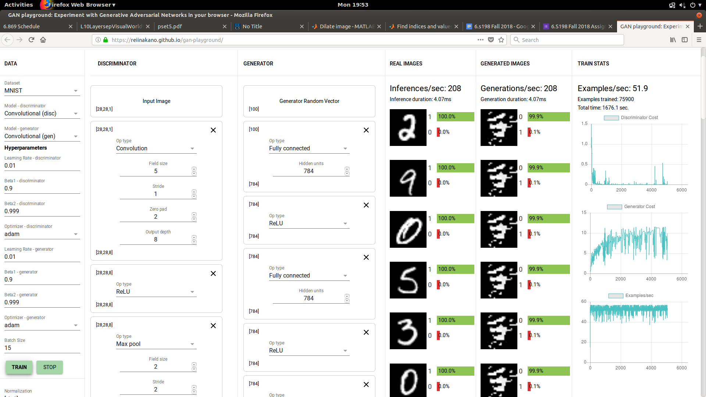

The second layer is needed because it's impossible to reshape a size 100 vector into the 28x28x1 shape we'd need to create an mnist image. 28 times 28 is 784, and it's easy to see how to reshape between a vector of size 784 to a tensor of size 28x28x1.
After playing around with them for a bit, it's clear that the convolutional model produces much nicer and faster results than simple fully connected layers.
I'm not sure if it has anything to do with the computer I was using, but as much as I tried to change the parameters, I couldn't seem to get away from all of the generated examples looking the same way and not coming close to forming a concrete image. They seemed to get stuck on examples such as the one below.
Again, I'm not sure if it was a bug with my instance of using the website, but even when trying to follow the above question, I seemed to get stuck with the generator producing the same-looking images:
